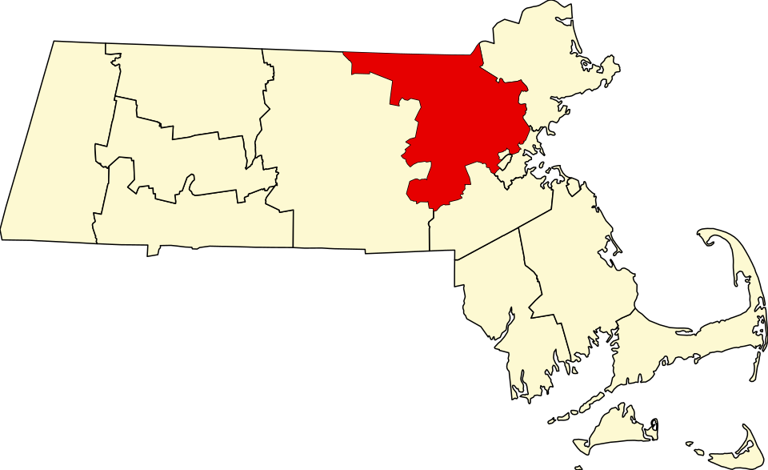

Middlesex County has the largest population in Massachusetts and New England, with 1,632,002 people. The county seat is Lowell and Cambridge.
Founded in 1643, Middlesex County is located in the Commonwealth of Massachusetts.
